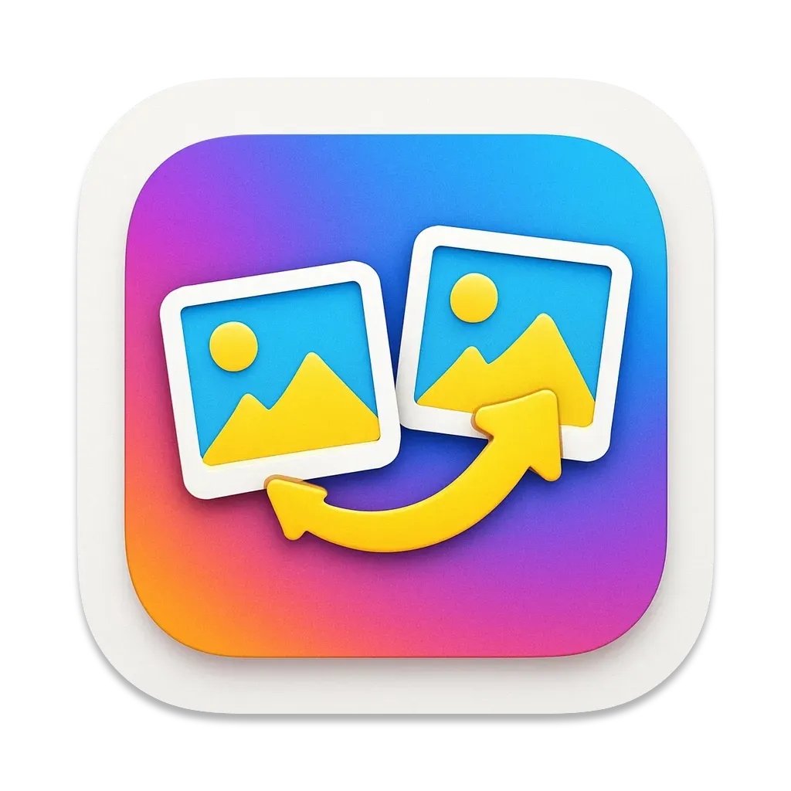

Image Compare
Compare app screenshots
Screenshots
{kind=link}
Description
Compare folders of images with ease using our vibrant and intuitive Mac app. Whether you’re a designer, developer, or photographer, this app helps you:
- 📁 Compare Two Folders – Quickly spot missing or changed images between folders
- 🔍 Highlight Visual Differences – See pixel-level changes with side-by-side or overlay views
- 🎯 Ignore Areas That Don’t Matter – Define zones to exclude from comparison (e.g. timestamps, watermarks)
- ⚡️ Fast and Simple
Perfect for QA, version control, or just organizing your creative work. Download now and see what’s changed – and what hasn’t.
How to use...- Keep a folder of base line images
- Generate a new folder of app images for your next release
- Use the app to select both folders
- Use "Create Ignore Area" and select an area like the navigation bar to ignore
- Select "Compare Image Files" to see which images do not match
Contact
Please contact us if you spot an issues.
Send Email